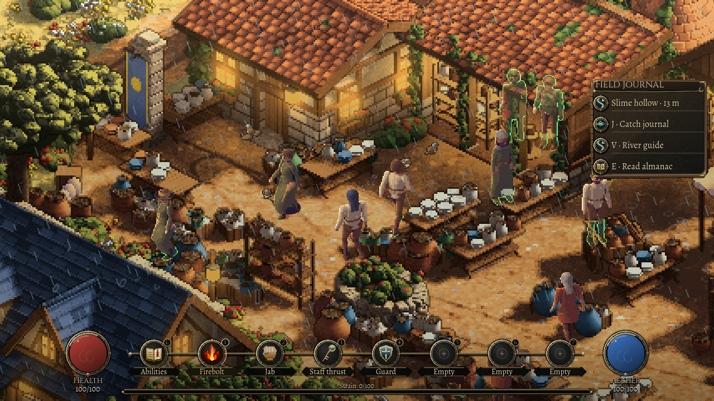
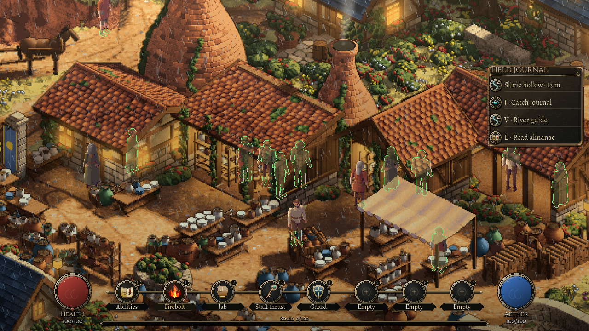

31 October 2026
When the roofs fill
31 October 2026
Heavy rain should change the small life of a town. Sparrows leave the open ground, rats stop crossing the lanes, and a cat finds somewhere to wait. When the weather clears, those same animals should come back out.
This pass starts in Kilnworth with five sparrows, two rats and two cats. They are the existing ambient population, with their own positions and habits. The storm interrupts those habits and sends them towards reachable roof cover.
A place to wait
The animals read the same weather as the people and the rain on screen. Light rain lets them carry on. Thunder or a downpour sends them looking for shelter, with a short individual delay so the whole street does not turn at once.
A roof has to be real. Standing beside a wall can give a rat a hiding place, but it does not necessarily keep anything dry. The new shelter choices come from the town's actual roofed spaces. The animals still have to reach them through the same ground and walls that shape the town.

A blocked route leaves an animal where it really is. It can try again; it cannot disappear from the lane and reappear indoors. Birds and cats remain beneath the roof, with the scenery hiding them where it should. Rats keep their existing rule that hiding requires a proper hiding place.
One early version let several animals stop at the first edge of a roof. They now continue to their assigned places beneath it. It is a small change that makes waiting together easier to read.
The lull before they leave
A brief break in the rain is not enough. The animals wait for at least six continuously safe seconds, then release their shelter routines at slightly different times. Renewed bad weather resets that wait. When they leave, ordinary wandering, pecking and chasing resume.

A refuge also has to stay safe. The underlying animal rules let a nearby hazard interrupt shelter and take priority over waiting for the sky. Fire escape is covered by simulation checks; connecting the traced town's own fire hazards to this first population remains separate work.
One inhabited corner
This is a bounded first population on Kilnworth's ground floor. Its individuals stay attached to that place while the town replaces the scenery textures around the view. That replacement must update how they sit behind walls and roofs without moving or replacing the animals themselves.
There is more to do: wildlife on other levels, animals beyond the town, and weather arriving from the regional climate and seasons. This pass gives one corner of town a reason to empty in the rain and fill again afterwards. The native tour checks that first slice from rain to recovery; the wider wildlife work remains open.